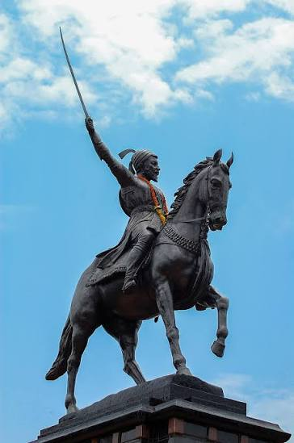

Chhatrapati Shivaji Maharaj was a brave Indian king who founded the Maratha Empire in 1674. He is celebrated for establishing Swarajya, a kingdom built on fairness, cultural pride, and respect for ordinary citizens.
Shivaji Maharaj was a brilliant military strategist who mastered guerrilla warfare to defeat much larger enemy empires. By using the rugged hills to his advantage, he successfully built and captured a massive network of over 300 forts.
